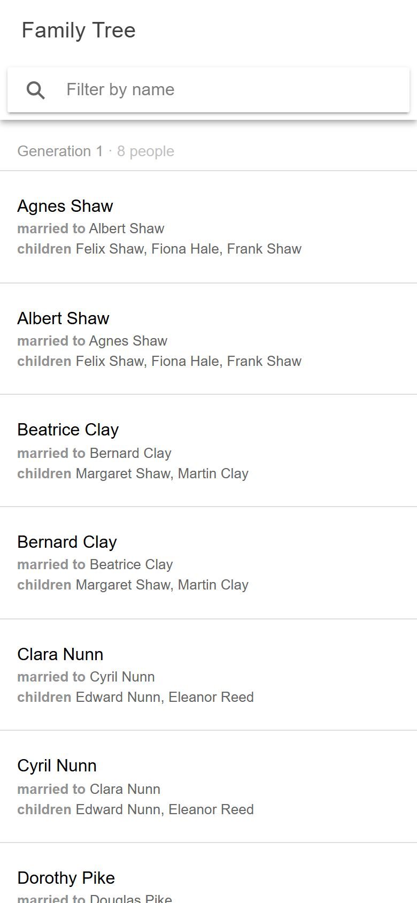
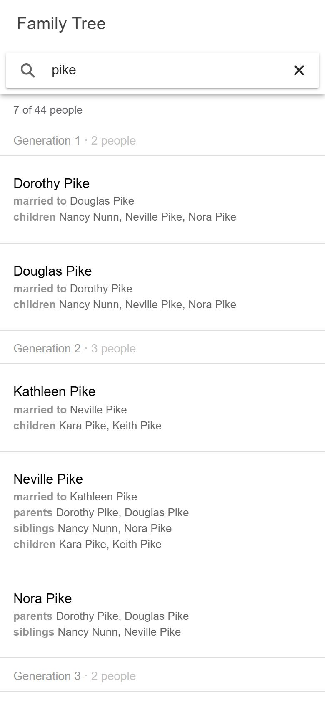
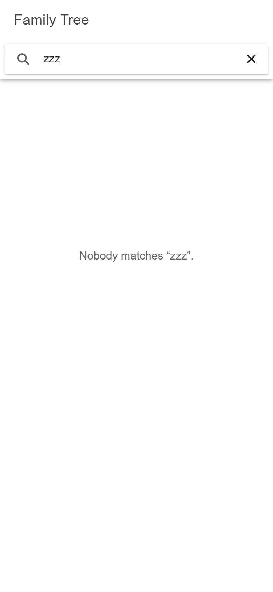
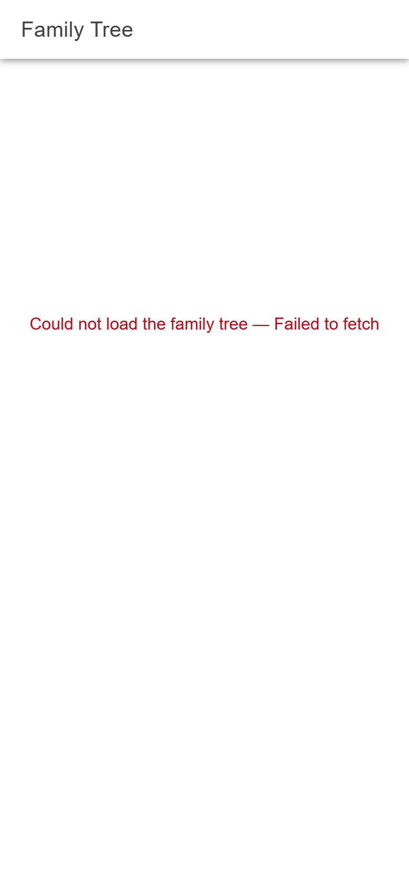

boris · reference manual
A single-screen Ionic React app that shows one family, generation by generation. It has no accounts, no navigation and no editing: it loads the whole tree once, groups it into generations, and lets you narrow the list by typing a name. This manual describes what is on the screen, how the code is arranged, and how a build learns which API to talk to.
The app lives in apps/web/ of the
boris repository. It
is React 18 with the Ionic
component library, built by Vite. There are four source files that matter
— App.tsx, PersonCard.tsx,
filter.ts and api.ts — plus a stylesheet of
about thirty lines. There is no router, no state library and no data
cache.
| Thing | Where |
|---|---|
| Deployed app |
family-tree-flame-ten.vercel.app
— Vercel, built from develop, root directory
apps/web
|
| API it reads |
https://api-production-53f7b.up.railway.app/graphql
— FastAPI and Strawberry on Railway
|
| Source | apps/web/src/ |
| End-to-end tests | apps/web/e2e/family-tree.spec.ts (Playwright) |
Every deployment of the app is pointed at an API at build time, not at run time — see how the build finds the API. The app itself just reads one baked-in URL.
One POST, once, on mount. api.ts sends a hand-written
GraphQL query to {API_URL}/graphql with
content-type: application/json and a body of
{ "query": "…" }. There is no GraphQL client library; the
comment in the file says why — no library until the schema is big
enough to need one. The query asks for everything the screen needs
in a single round trip:
{
generations {
depth
people {
id
name
spouse { name }
parents { name }
children { name }
siblings { name }
}
}
}Siblings and children are derived by the API, not stored. The data files record only each person's parents and spouse; everything else on a card is computed server-side.
One scrolling list under a fixed header. Reading top to bottom in the screenshot below:
Generation numbering starts at 1 in the display and 0 in the data: the
divider prints generation.depth + 1. Generation 1 is the
oldest. The live tree is 44 people across four generations, split
8 / 15 / 16 / 5.

The frame below is the real deployed app, at a phone width of 390px. Type into its searchbar and it will filter, exactly as it would on your own device.
If the frame is blank, your browser or an extension is blocking third-party frames. Open it directly:
family-tree-flame-ten.vercel.app
The API is on Railway, which sleeps when idle. A first load after a quiet spell can take several seconds of spinner before the list appears.
App.tsx holds a single state value that is one of three
shapes — loading, ready, failed —
and the ready state splits in two depending on whether anything matched
the filter. That is the whole of the app's behaviour.
data-testid="loading"fetchGenerations() resolved. The generations are kept in
state as they came from the API and are never refetched.
data-testid="generation",
data-testid="person",
data-testid="filter",
data-testid="match-count"
data-testid="no-matches"API returned 503), a GraphQL errors array,
a response carrying no data, or the network never
reaching the host at all.
data-testid="error"
pike: the match count appears, and each
divider now counts only the people left in it.

zzz. The searchbar
stays so the query can be cleared.

/graphql blocked. Note that the searchbar is gone.
includes. pike, Pike
and ike all find the Pikes. Nothing else on a card is
searched — you cannot find someone by their spouse's or children's
names.
daisy leaves one card under one
divider.
App — src/App.tsx
The only stateful component. Takes no props; it is rendered once by
main.tsx inside React's StrictMode. It holds
two pieces of state:
type State =
| { status: 'loading' }
| { status: 'ready'; generations: Generation[] }
| { status: 'failed'; reason: string };
const [state, setState] = useState<State>({ status: 'loading' });
const [query, setQuery] = useState('');
A useEffect with an empty dependency array calls
fetchGenerations() once on mount and stores either the
generations or the error's message. It guards the result with a
cancelled flag in its cleanup function, so an unmount
mid-flight does not set state on a dead component.
Two derived values drive the rendering:
shown — filterGenerations(state.generations, query)
when ready, otherwise an empty array. Memoised on
state and query.
total — countPeople(state.generations) over
the unfiltered tree, which is the 44 in the match count.
The rest of the component is the four states rendered as mutually
exclusive conditionals, then the list: an
IonItemGroup per generation keyed by depth,
carrying a sticky IonItemDivider and one
PersonCard per person keyed by id.
PersonCard — src/PersonCard.tsxexport function PersonCard({ person }: { person: Person })
One prop, person. Renders an IonItem carrying
data-testid="person" and
data-person-id={person.id} — the stable slug, such as
fred-shaw, that the end-to-end tests address people by. The
name is an <h2>; below it come the relationship lines,
each rendered by a small private Relation component:
function Relation({ label, people }: { label: string; people: readonly PersonRef[] })
Relation returns null when the list is empty,
which is why absent relationships leave no trace rather than an empty
label. Multiple names are joined with ", ". When a person
has no spouse, no parents, no siblings and no children, the card prints
No recorded relationships instead.
filter.ts — src/filter.tsexport function filterGenerations(
generations: readonly Generation[],
query: string,
): Generation[]
export function countPeople(generations: readonly Generation[]): number
Pure functions over the shape the API returns; no React, no I/O.
filterGenerations trims and lowercases the query, returns a
copy of the input when that leaves nothing, and otherwise maps each
generation to a narrowed copy and drops the ones that end up empty. Its
comment states the rule the tests hold it to: the headings never
claim people that are not shown. countPeople sums the
people across generations and is used twice — for the matched count and
for the total.
api.ts — src/api.tsconst API_URL = import.meta.env['VITE_API_URL'] ?? 'http://localhost:8000';
export class ApiError extends Error {}
export interface PersonRef { readonly name: string }
export interface Person {
readonly id: string;
readonly name: string;
readonly spouse: PersonRef | null;
readonly parents: readonly PersonRef[];
readonly children: readonly PersonRef[];
readonly siblings: readonly PersonRef[];
}
export interface Generation {
readonly depth: number;
readonly people: readonly Person[];
}
export async function graphql<T>(query: string): Promise<T>
export async function fetchGenerations(): Promise<Generation[]>
graphql is the transport: POST the query, then throw an
ApiError in three cases before returning
body.data.
| Condition | Message that reaches the screen |
|---|---|
| Response status outside 2xx | API returned 503 |
GraphQL errors array is non-empty |
the first error's message, or
unknown GraphQL error
|
data is missing |
response contained no data |
| The request never completed |
whatever fetch rejected with, e.g.
Failed to fetch
|
fetchGenerations is the only caller: it runs the
generations query and unwraps data.generations. When no
VITE_API_URL was baked in — a plain
npm run dev — API_URL falls back to
http://localhost:8000, the port the local FastAPI service
listens on.
Vite inlines import.meta.env.VITE_API_URL at build time, so
the API host is fixed in the bundle. The point of the machinery below is
that a deployment talks to its own API rather than a hardcoded
one: production to production, a pull-request preview to that pull
request's API.
The web package's prebuild script runs
node ../../scripts/write-api-url.mjs before every
vite build. That script deletes
apps/web/.env.production.local first — the file is
gitignored and survives between builds, and Vite loads it ahead of
.env.production, so a stale value would silently beat the
fallback — then works down this precedence:
| Checked | Action | Result |
|---|---|---|
VITE_API_URL already set |
explicit |
Writes nothing and leaves it alone. This is how the Playwright suite points a build at its own local uvicorn. |
VERCEL_GIT_PULL_REQUEST_ID set |
pr |
Writes
VITE_API_URL=https://api-boris-pr-<number>.up.railway.app,
from the template in prApiUrl() — overridable with
RAILWAY_PR_API_TEMPLATE.
|
API_URL set |
mapped |
Writes VITE_API_URL=<API_URL>. Railway's
Vercel integration syncs its own API_URL in; this
maps it onto the VITE_ prefix Vite requires to
expose a variable to client code.
|
| Nothing set | fallback |
Writes nothing, so the committed
apps/web/.env.production stands:
https://api-production-53f7b.up.railway.app.
|
The Railway integration syncs the production environment's
API_URL into Vercel for previews as well as production.
Without the pr branch, a preview frontend would be built
against the production API and show production's data — so a branch would
look correct in a browser while proving nothing. Reading Vercel's
VERCEL_GIT_PULL_REQUEST_ID and deriving the matching Railway
PR host closes that gap. The host pattern is a Railway convention rather
than a contract, which is why it is overridable.
writeApiUrl() returns { action, url } rather
than only writing a file, so the precedence can be unit-tested without
touching the filesystem — see src/write-api-url.test.ts. The
CLI wrapper prints the decision, so a build log says which of the four
paths was taken.
Every data-testid in the app is a contract with
apps/web/e2e/family-tree.spec.ts and the component tests,
not decoration. The Playwright suite runs against the
built bundle served by vite preview and a real
uvicorn — not the dev server, and never a mocked fetch — so
renaming one of these breaks a required check. Change them only
alongside the tests.
| Hook | On | What the suite asserts with it |
|---|---|---|
person |
Each IonItem card |
44 cards unfiltered, 0 after a failure or an empty result |
generation |
Each IonItemGroup |
4 groups, holding 8 / 15 / 16 / 5 people; groups disappear when filtered empty |
filter |
The IonSearchbar |
Typing, via its inner input — the searchbar is a web
component
|
match-count |
The count paragraph | Contains of 44 people when a filter is active |
no-matches |
The empty-result message | Visible for zzzzz, gone once the field clears |
error |
The failure message |
Visible when the route to **/graphql is aborted
|
loading |
The spinner wrapper | Present before the request settles |
Alongside them, data-person-id carries each person's slug.
The suite uses it to assert derived relationships on named individuals —
that Fred Shaw lists a sister the data file never stored, that Nora Pike
shows parents but no married to line, that an only child shows
no siblings.
npm install
npm run dev # web app on http://localhost:5173
cd apps/api
uv run uvicorn api.main:app --reload # the API on :8000
With no VITE_API_URL set, the dev server's app calls
http://localhost:8000 — so start the API too, or the first
thing you see is the failure state.
| Command | Runs |
|---|---|
npm run verify |
Everything below, in order. This is the contract. |
npm run verify:web |
tsc --noEmit, ESLint, Vitest, then
vite build
|
npm run verify:e2e |
Playwright against the built bundle and a real uvicorn, on ports derived from the worktree name |